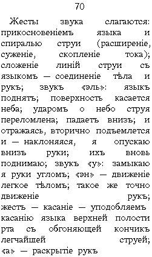
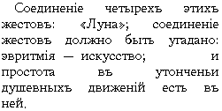
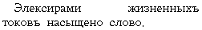

Glossolalia (Section 70)
GLOSSOLALIA

Gestures of sound combine: with a touch of the tongue and a spiral of the stream (expansion, contraction, concentration of the flow) the composition of lines of the stream with the tongue is -- the union of the body and the arms; for the sound "l'": the tongue is raised; the surface touches the palate; with a tap against the palate the stream is broken up; it falls downward; and being reflected, it rises a second time and -- as I am bending over, I lower my arms downward: I raise them anew; for the sound "u": I close my arms in an angle; "n" is -- a light movement of the body; the movement of the arms is exactly the same; the gesture -- of touching -- is like the touching of the tongue of the upper cavity of the mouth with a very light stream overtaking the tip; "a" is -- the spreading apart of the arms.

The union of these four gestures is: "Luna"; the combination of gestures should be guessed at: eurythmy is -- an art; and in it is to be found simplicity in the refinement of soulful movements.

The word is satiated with elixirs of life's currents.